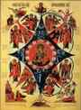
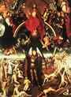

< < < Back
Why True Preparation For Christmas Involves Introspection And Sacrifice – Return Of Kings
I greet the men of ROK afresh this week with great anticipation, for we are entering upon my favourite time of year—that of Advent and Christmas.
It is sometimes easy to focus on the negative in our times; the shapers and manipulators of modernity often contrive (and succeed) at robbing men of their sense of purpose, of their conviction, of their joy in what transcends the self and the political. This demoralization is amplified by the fact that our institutions are often, now, co-opted and usurped by persons with inimical intent.
It can be tough to connect with the truths and ideals of our civilization without the assistance of the institutions whose natural role is to facilitate this, but I believe it is thoroughly worth the effort to attempt. Without a connection to beauty, to truth, to the transcendent, we die a death worse than the mere death of the body. So, I invite men to stir up their spirits at this time of year, and if it please God, let us learn how we may spite the enemies of patriarchy and civilization by striving to connect with the sublimity of the forthcoming season, even if it requires us to do all the heavy lifting ourselves.
Advent: Season of Dread
The Mother of God of the Bush Unburnt; an Icon depicting Old Testament types of the Incarnation
Advent exposits the tension between light and darkness, dread and hope, majesty and humility, joy and sorrow. Many of the Christmas carols dwell on such themes, both in the musical mood and in the lyrics (i.e., “…the hopes and fears of all the years, are met in thee tonight”). Those who reflect on the Mystery of the Nativity and the events surrounding it, will see how incongruous is a sentiment of cheap, cutesy “fun:” Caesar has brought the known world under the sword of Rome and commands the census; people are uprooted from their homes to satisfy this command.
The Holy Family is reduced to sheltering in a cave where livestock are tended. Herod commands a massacre of children and the Holy Family is forced to flee. Most of all, the uncircumsribed, the infinite, the perfect, the holy God, is about to be circumscribed and joined to a finite nature; God will become a man, and, in the midst of a freezing night, be set in a feeding trough—a fitting portent, and a dread mystery.
That is what the Liturgical texts of both the Eastern and Western Church contemplate for the feast of Christmas. In the east, the high point of Matins erupts with the megalynaria of the feast, chanting such words as these:
Μυστήριον ξένον, ὁρῶ καὶ παράδοξον! οὐρανὸν τὸ Σπήλαιον· θρόνον Χερουβικόν, τὴν Παρθένον· τὴν φάτνην χωρίον· ἐν ᾧ ἀνεκλίθη ὁ ἀχώρητος, Χριστὸς ὁ Θεός· ὃν ἀνυμνοῦντες μεγαλύνομεν.
(“I behold an alien and unthinkable mystery! A cave has become heaven, and the virgin maid a cherubic throne. Narrow is the manger wherein lies the Boundless One, Christ our God, Whom hymning we magnify.”)
This Responsory, in the usual Medieval setting of the Latin Church, is the very center of Matins:
O magnum mysterium et admirabile sacramentum, ut animalia viderent Dominum natum jacentem in praesepio. Domine, audivi auditum tuum et timui: consideravi opera tua, et expavi, in medio duorum animalium jacentem in prasepio.
(“O great Mystery, and wondrous Sacrament, that beasts should see the Lord born and lying in a trough. O Lord, I have heard the rumour of Thee and was afraid; I contemplated Thy works and I shook with dread, to consider Thee lain in a trough between two beasts.”)
Many depictions of the Nativity make it to appear almost “cute;” but the predominant sentiment of the Tradition is dumbfounded awe. Creator of the Virgin, born of the Virgin? He lays in a feeding trough, to Whom beasts are sacrificed? The invisible God, beyond man’s swiftest thought, reflected in the eye of an ox? The Master of the house has come amongst His slaves; now there shall be peace or woe ineluctable, to every man!
Advent: Season of Doom
The Second and Final Advent
It stands to reason, that if the Lord came to save us and destroy the power of sin and death, then those sympathetic to sin and death will greet His Advent with considerable fear. “Now is the judgment of the world; now shall the prince of this world be cast out.” The Truth is now present in our midst; His very presence shall prove us for what we are. And indeed, in Advent it was customary to focus on the judgment, recognizing that the first Advent of the Lord points to the second Advent. If the first Advent seems gentle, it was gentle to us while it was severe to the power that dominated us; but our Lord made it clear that when He would come again, if He found us still fraternizing with the enemy He took pains to dispel, we would receive the same traitor’s treatment.
The last Sunday before Advent has for its Gospel the 24th chapter of Matthew (“when the Son of Man returns, it will be like lightning flashing from the East to the West”); the first Sunday of Advent was when the famous Dies Irae (“Day of Wrath”) was sung in olden days; the theme of judgment continued right up to Christmas Eve, when one of the Canticles of the Sibyls (“Iudicii Signum”) was sung:
The earth shall be soaked in sweat at the sign of the Judgment.
The King Who is to endure through the ages shall come from heaven,
For this purpose: that, being present in the flesh, He may Judge the world.
Fire shall consume the earth, seas and skies,
It shall seek out and destroy the portals of loathsome Hell.
It robs the sun of his lightspring and tramples the starry choir
Heaven is overturned, the moonlight perishes;
It shall cast down the hills and uplift the vales from their lowliness.
Moreover, when the trumpet shall peal down its grievous blast upon the earth,
The guilty man shall be weeping for his misery and sundry toils
And the earth shall shew forth the pit and hell in its yawning maw.
Then from heaven there shall fall fire and the river of brimstone.
It’s not exactly “Jingle Bell Rock,” is it?
Now, I’m not meaning to depress all the fellas at ROK; as great as is the sobriety before Christmas, even so great is the joy and mirth when Christmas comes. But it is a general spiritual principle that glory and peace are not simply handed to us, but are arrived at only through spiritual struggle.
My first bit of advice for men who wish to recover the ancient spirit of Christmas, then, would be to let Christmas be Christmas; the time before Christmas is a time to anticipate this dread and awful Mystery—the Imminent arrival of Truth in our midst. It is the time to contemplate our need of it, our hope of it, our fear of it. We prepare to meet the Lord when He comes, therefore, that our response to His Advent will not be to our shame, but to our very great joy and profit.
Specific Suggestions From Traditional Observance
Beginning on the first Sunday of Advent, cease eating meat and dairy; on weekdays, wait until the afternoon to eat, if possible. If not possible, stick as close to the spirit of this practice as you can. Trust me, when I say that your Christmas Feast will be all the more meaningful and merry after a month of fasting. Use the hunger for focus, penance and training in self-mastery.
Men should always limit television and frivolous entertainments, but especially at fasting seasons like Lent and Advent. Long ago, I found that if I came home from work and began my evening with some time reflecting either on that day’s prayers (from the Breviary/Divine Office), or quietly meditating on the season’s hymns, carols, Scripture, etc., I would enter a recollected mood that would last the whole night. Contrary to expectation, the fasting periods quickly became my favourite and most introspective times of the year.
Strive to maintain an environment conducive to this custody of mind and stomach. Try to avoid the endless stream of silly parties, even if courtesy will require you to attend some. Decorate the home liberally, but at first with simple and stark trimmings of pine, of holly, of dark green, red and violet. Stick to the carols that anticipate Christmas, (such as Veni, Veni Immanuel), or are thoughtful meditations on the theology of the Mystery (such as Lo, How a Rose E’er Blooming or The Angel Gabriel).
Save the bright lights, the gold and silver trimmings, the festive decorations, the most boisterous carols celebrating the joy of Christmas Day… for Christmas Day! As we will see in a future post, Christmas Day is only the beginning of Christmas. Until then, let everything be conducive to the mood of quiet, of recollection, of awed anticipation.
Those wishing to learn more about the traditions of Advent, can go here:
I wish you all a recollected and soul-sharpening Advent.
Read More: A ROK Christmas Benediction From Brother Cui Pertinebit


{kind=link}
{kind=link}